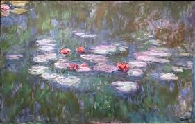
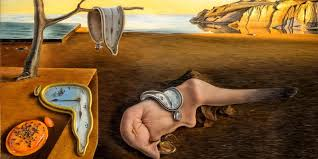

Leonardo da Vinci

Obra famosa: La Mona Lisa
Leonardo da Vinci fue un genio del Renacimiento. Su pintura más conocida, la Mona Lisa, destaca por su técnica y la misteriosa sonrisa de la modelo.
Miguel Ángel

Obra famosa: La creación de Adán
Miguel Ángel fue un escultor y pintor del Renacimiento. Su obra más famosa se encuentra en el techo de la Capilla Sixtina, en el Vaticano.
Vincent van Gogh

Obra famosa: La noche estrellada
Van Gogh fue un pintor postimpresionista. Su estilo lleno de color y emoción inspiró a generaciones. “La noche estrellada” es una de sus obras más reconocidas.
Frida Kahlo

Obra famosa: Las dos Fridas
Frida Kahlo fue una pintora mexicana reconocida por su estilo único y sus autorretratos que expresan dolor, cultura y fuerza.
Claude Monet
Obra famosa: Nenúfares
Claude Monet fue uno de los fundadores del impresionismo. Su serie de los nenúfares muestra la belleza del agua y la luz en su jardín de Giverny.
Pablo Picasso

Obra famosa: Guernica
Picasso fue un artista español y creador del cubismo. Su pintura “Guernica” es una poderosa denuncia contra la guerra y la violencia.
Salvador Dalí
Obra famosa: La persistencia de la memoria
Dalí fue un pintor surrealista español. Es conocido por sus imágenes oníricas y los relojes derretidos en su famosa obra.
René Magritte

Obra famosa: El hijo del hombre
Magritte fue un artista belga del surrealismo. Su cuadro más famoso muestra a un hombre con un bombín y una manzana flotando frente a su rostro.